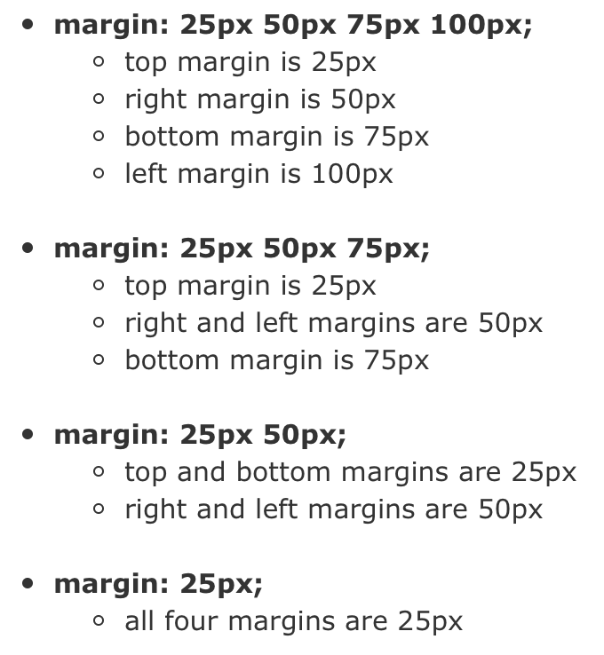

Concepts in CSS
Margin, Border, and Padding
Margin, border and padding are all closely related, but distinct in particular ways. First off, I find the acronym MBP (think Macbook Pro!) to be incredibly useful for remembering each word's significance and order. See below!

To best illustrate the concept of margin, border, and padding as it applies to CSS, I will create a useful metaphor before delving into technical explanations and definitions.
Imagine that your CSS wants to create a box-shaped fence to protect sheep within. From the top down, you first have an invisible force to repel the nasty aesthetic of bunching items together! This invisible force on the outer rim of the fence/border is called margin. Margin is the transparant area around an element outside the border. This is useful for ensuring other elements aren't bunched up against a particular div.
Next you have a tangible, physical fence. This is your border (which can also be transparent!) Border is the actual encasing around an element, that can either be transparent, dotted, or solid.
Finally, and furthest down from the top, we have padding. Padding is an invisible force that keeps the sheep a certain distance from the fence. Padding is the transparent space between the element's content and its border.
The syntax used for margin, border, and padding is consistent with other syntax you've likely encountered, but does contain some useful peculiarities.
While I could explicitly outline how the number of values relates to the order in which its listed, for the sake of brevity and clarity, the picture below should elucidate how the syntax works.
